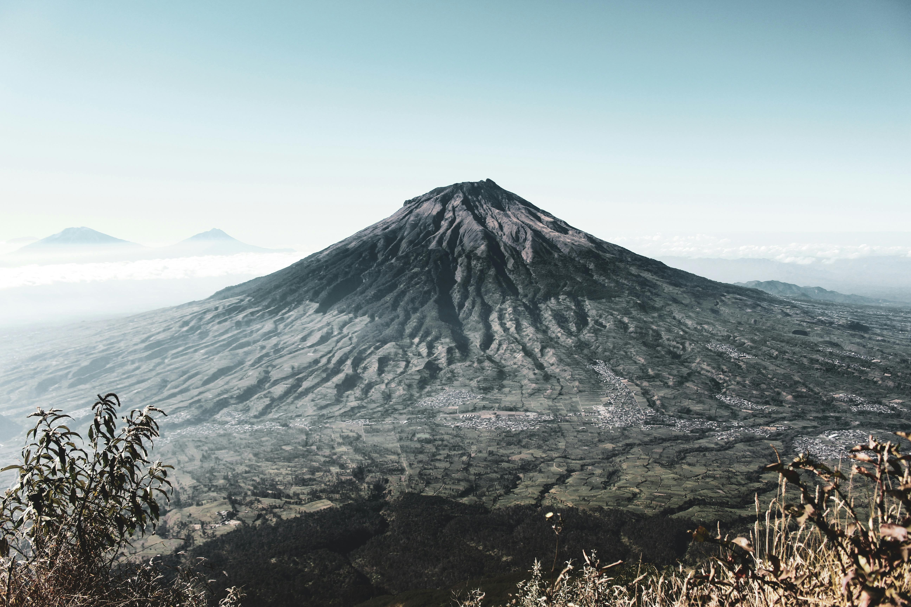
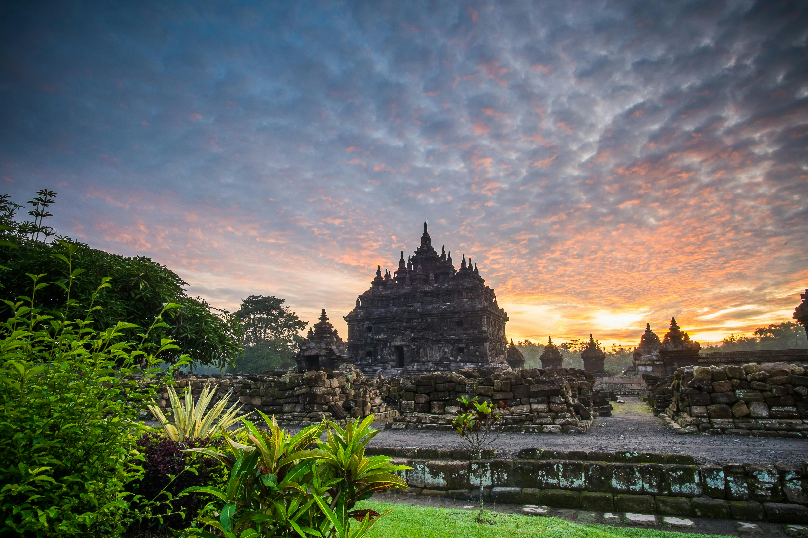
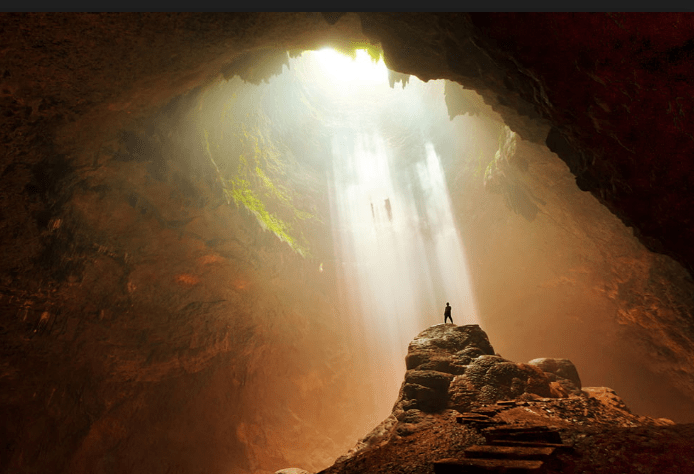

Jelajahi Yogyakarta

Keindahan Alam
Yogyakarta, dengan pesona alamnya yang luar biasa, menawarkan panorama yang memukau, seperti pemandangan Gunung Merapi yang gagah dan keindahan pantai-pantai seperti Pantai Parangtritis yang menenangkan.

Budaya dan Seni
Kota ini terkenal dengan kekayaan budaya dan tradisi Jawa, dari candi-candi megah seperti Candi Borobudur dan Prambanan hingga seni pertunjukan yang menakjubkan seperti Wayang Kulit dan Tari Ramayana yang diadakan di Alun-Alun Selatan.

Aktivitas Wisata
Wisatawan dapat merasakan pengalaman luar biasa dengan mengunjungi Keraton Yogyakarta yang penuh sejarah, berpetualang ke Goa Jomblang untuk menikmati keindahan alam bawah tanah, atau mencoba sensasi bermain di pasir pantai menggunakan kendaraan off-road di kawasan pantai selatan.